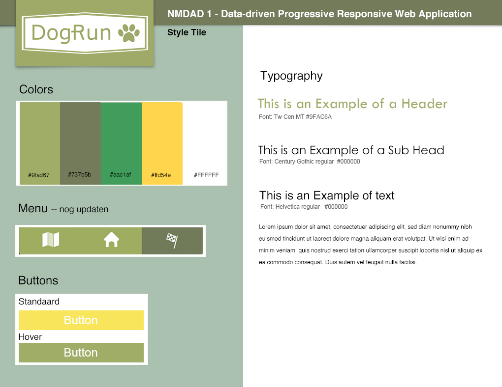
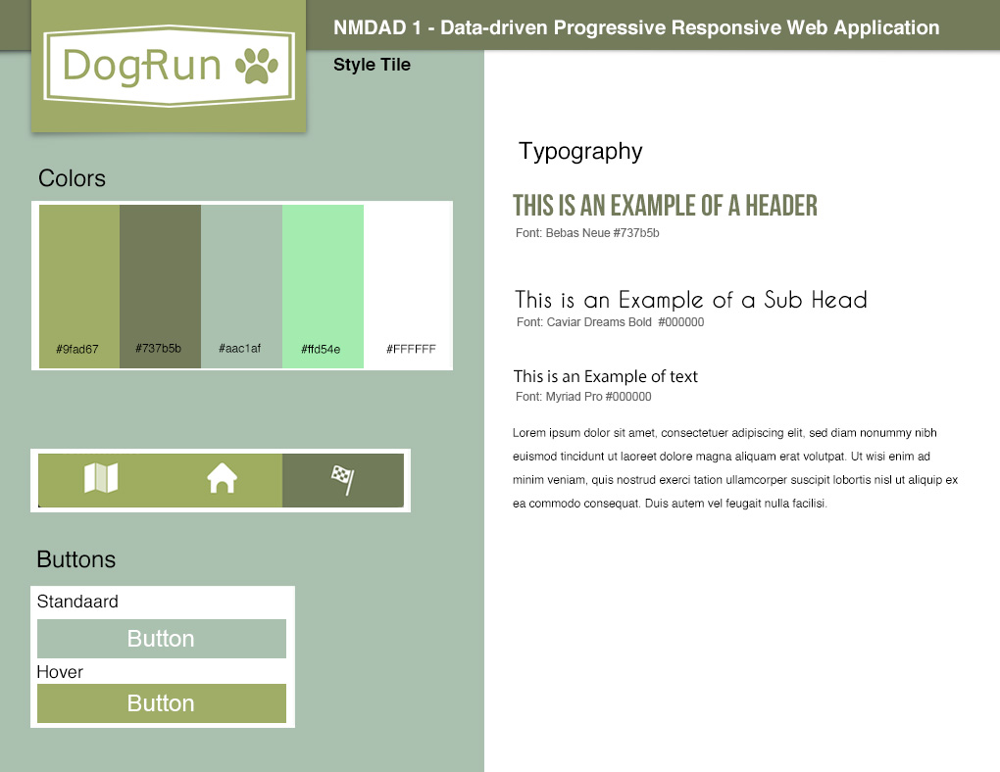
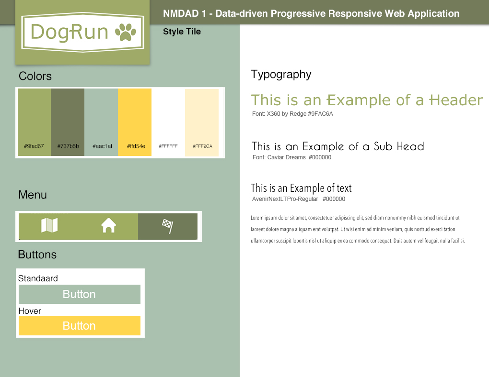
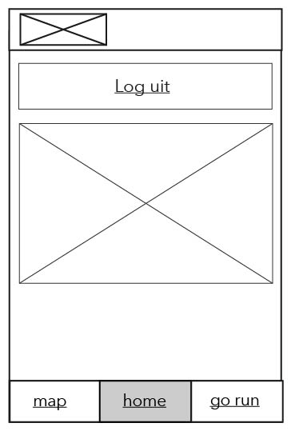
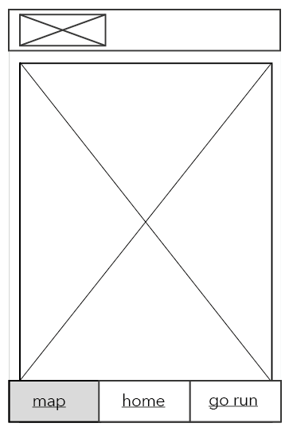

NMDAD-I: Niel Duquesne & Jodie De Greef
2MMP-proDUCE-13 NMDAD-I 2016-2017
Doelpubliek
- Demografisch
- Mannen en vrouwen
- 16 jaar en ouder
- Psychografisch
- Sportief
- Dierenliefhebber
- Wandelt of loopt graag
- Natuurliefhebber
- Technografisch
- Woonplaats in Gent
- Elk moment van de dag/nacht
- Standaard kennis
Functie
- Met je hond gaan wandelen of lopen aan de hand van een handige mobiele applicatie.
- Op zoek gaan naar:
- Hondentoiletten
- Losloopweides
- Parken
- Je kan je registreren en aanmelden en de gegevens van jouw hond aanpassen.
- Handige kaart:
- Losloopweides
- Parken
- Hondentoiletten
- Extra: ook anti-poeptegels en hondenzwemzones
Datasets
- Hondenvoorzieningen
- https://data.stad.gent/datasets/hondenvoorzieningen
- Parken
- https://data.stad.gent/datasets/parken
- Infrastructuur
- https://data.stad.gent/datasets/straten-geogra sch-bestand
Sitemap

Ideaboards


Moodboard

Style Tile 1
Style Tile 2
Style Tile Final
Wireframes
Mobile
Home

Log in

Registreer

Wireframes
Mobile
Log out
Map
Go run

Wireframes
Mobile
Losloopweides

Hondentoiletten

Parken

Wireframe
Desktop

Screendesigns
Mobile
Home

Log in

Registreer

Screendesigns
Mobile
Log out

Map

Go run

Screendesigns
Mobile
Losloopweides

Hondentoiletten

Parken

Screendesigns
Desktop

Functies
Hover effect
Bedankt voor uw aandacht
NMDAD-I: Niel Duquesne & Jodie De Greef
2MMP-proDUCE-13 NMDAD-I 2016-2017